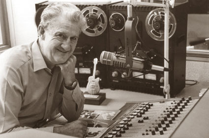

HISTORIQUE

La réalité virtuelle est apparût dans les années 50 pour le cinéma.
La première machine de réalité virtuelle est le Sensorama qui a été créée en 1962 par un philosophe et documentariste qui se nomme Morton Leonard Heilig.
Il a permit à son utilisateur de pouvoir regarder un film dans un univers 3D.
La machine peut particulièrement stimuler les différents sens: la vue, le toucher, l'ouïe et l'odorat.